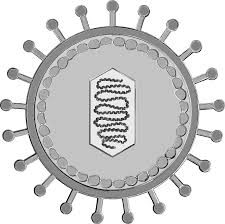

Chapter 2: Antivirals

Antivirals, as could be assumed by their name, treat viral infections. This includes common infections like COVID-19, HIV, and Influenza.

Antivirals, as could be assumed by their name, treat viral infections. This includes common infections like COVID-19, HIV, and Influenza.